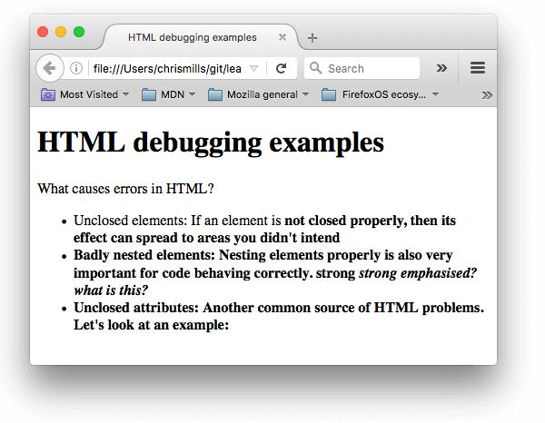

调试HTML
任务目标:
1、学习基础使用调试工具查找HTML中的错误。
HTML和调试
宽容（容错）代码
写错代码的时候，通常会遇到以下两种错误：
● 语法错误：拼写错误导致程序无法运行，只要你熟悉使用工具、知道错误信息的意思，修正这些错误是没问题的。
● 逻辑错误：语法是正确的，但代码不是你想要的，这意味着程序运行不正确。因为没有一个错误信息指示你错误的来源，逻辑错误通常比语法错误更难修复。
宽容的意思：浏览器以宽容（容错）模式来解析HTML，HTML本身不受语法错误的影响：这意味着即使出现语法错误，页面仍会显示。浏览器有内置规则来解析语法错误的标记语言，即使它不是您所期望的，您也可以运行某些内容。 当然，这也是一个问题！
注意: HTML可以自由的运行，是因为在 Web 创建之初，它的宗旨就是：允许人们获取他们发布的内容比确保所有语法完全正确更重要。如果当初 Web 在一开始就越来越严格的话，也许 Web 就不会像今天这样流行了。
<h1>HTML debugging examples</h1>
<p>What causes errors in HTML?
<ul>
<li>Unclosed elements: If an element is <strong>not closed properly,
then its effect can spread to areas you didn't intend
<li>Badly nested elements: Nesting elements properly is also very important
for code behaving correctly. <strong>strong <em>strong emphasised?</strong>
what is this?</em>
<li>Unclosed attributes: Another common source of HTML problems. Let's
look at an example: <a href="https://www.mozilla.org/>link to Mozilla
homepage</a>
</ul>

● <p> 和<li> 元素没有结束标签。从图片上看并没有导致太严重的影响，因为浏览器很容易推断出一个元素应该在哪里结束，在哪里开始。
● 第一个 <strong> 元素没有结束标签。这问题有一点大，因为浏览器不太容易确定元素在哪里结束。事实上，剩下的文本都被加粗强调了。
● 这部分代码嵌套很糟糕：<strong>strong <em>strong emphasised?</strong> what is this?</em>。由于之前的问题，要解释这是如何解析的并不容易。
● href 属性缺少了一个双引号。这导致了最大的问题—链接完全没有解析出来。

使用开发者工具审查元素，会发现浏览器像下面这样修补嵌套错误：
<strong>strong
<em>strong emphasised?</em>
</strong>
<em> what is this?</em>
有错误属性的链接整个被删掉了。最后一个列表元素就像这样：
<li>
<strong>Unclosed attributes: Another common source of HTML problems.
Let's look at an example: </strong>
</li>
验证HTML文档